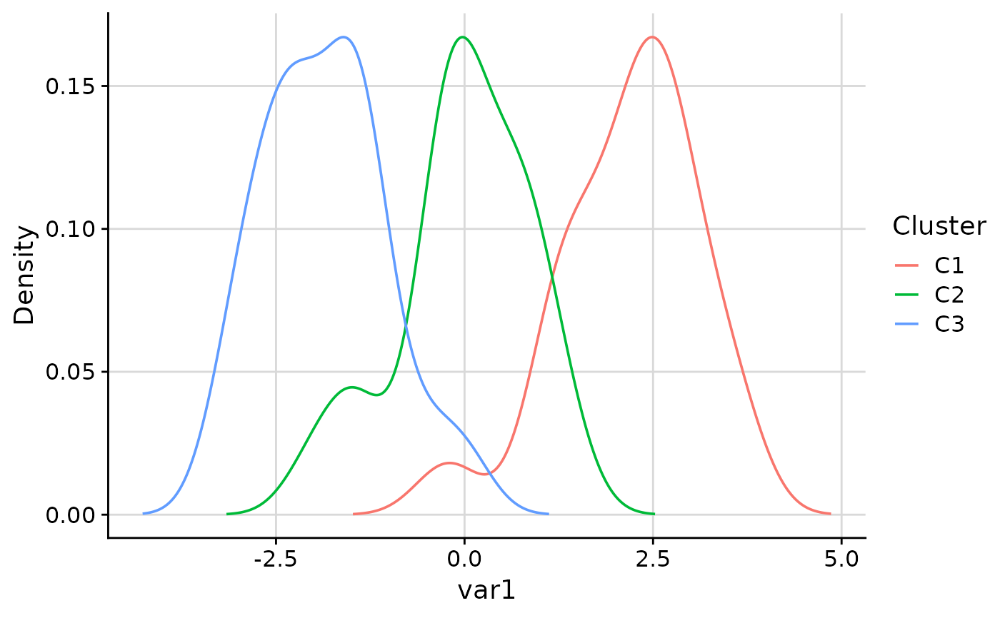
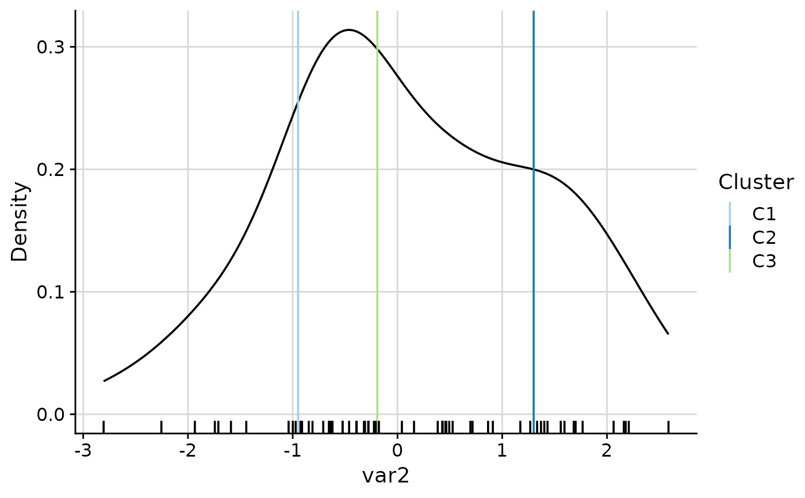
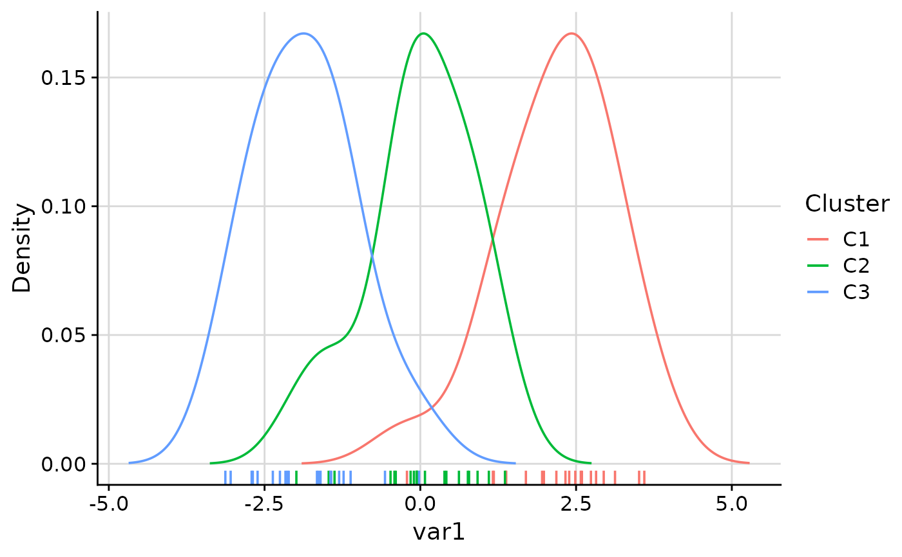
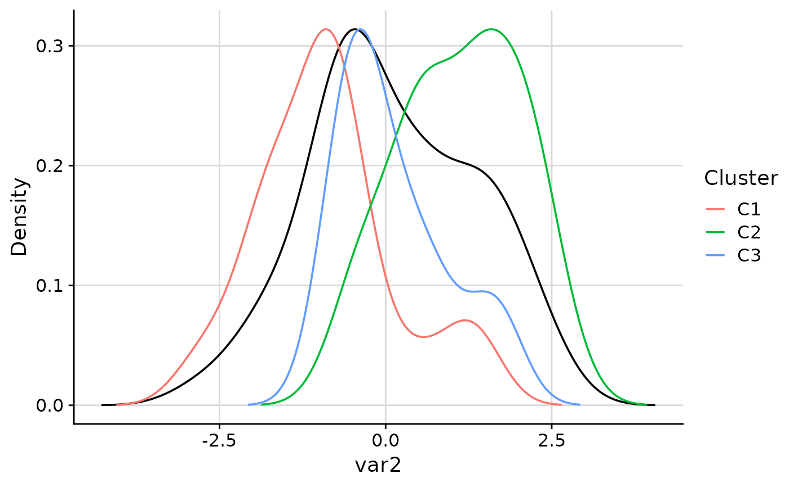
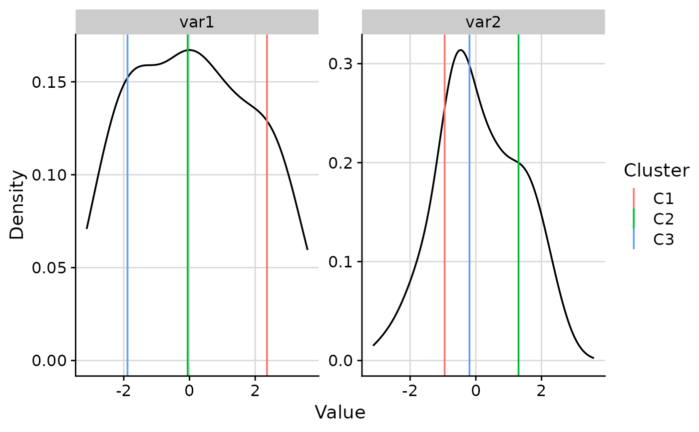
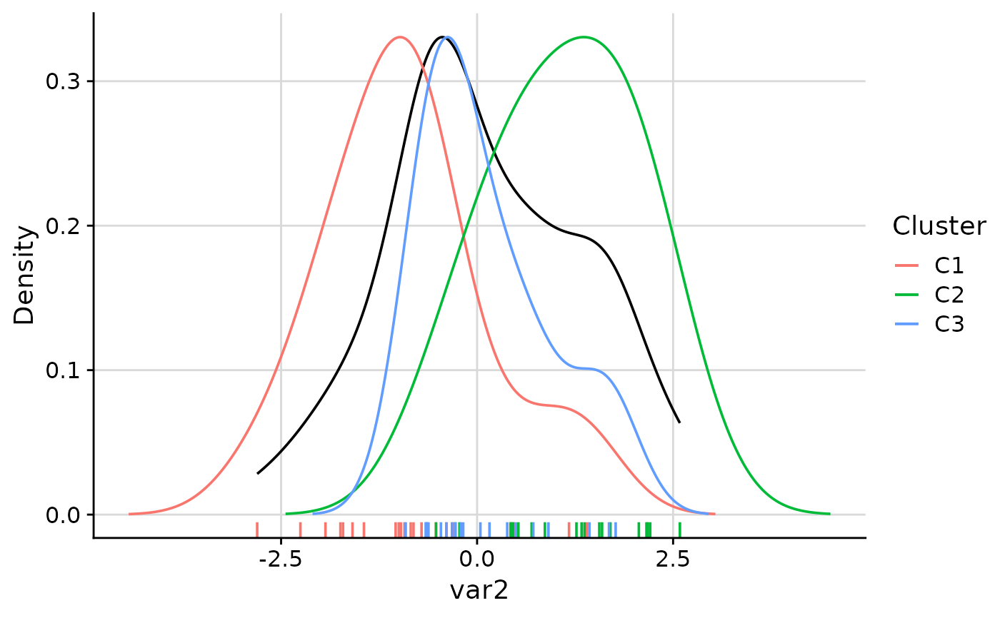
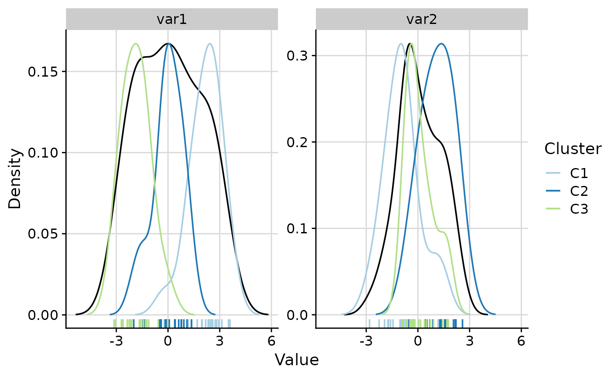

Plot density of variable values with per-cluster overlays
Source:R/plot_cluster_density.R
plot_cluster_density.RdFor each variable, plots kernel density estimates with per-cluster overlays (density curves and/or median lines). Returns a named list of ggplot2 objects or a single faceted plot.
Usage
plot_cluster_density(
data,
cluster,
vars = NULL,
col_clusters = NULL,
n_col = NULL,
n_row = NULL,
density = "both",
scale = "max_overall",
scales = "free_y",
expand_coord = NULL,
exclude_min = "no",
rug = NULL,
density_overall_weight = NULL,
bandwidth = "hpi_1",
font_size = 14,
thm = cowplot::theme_cowplot(font_size = font_size) + ggplot2::theme(plot.background =
ggplot2::element_rect(fill = "white", colour = NA), panel.background =
ggplot2::element_rect(fill = "white", colour = NA)),
grid = cowplot::background_grid(major = "xy")
)Arguments
- data
data.frame. Rows are observations. Must contain a column identifying cluster membership and columns for variable values.
- cluster
character. Name of the column in
datathat identifies cluster membership.- vars
character vector or
NULL. Names of columns indatato use as variables. IfNULL, all columns exceptclusterare used. Default isNULL.- col_clusters
named character vector or
NULL. Per-cluster colours. Names should match cluster labels. WhenNULL(default), the default ggplot2 colour scale is used.- n_col
integer or
NULL. Number of columns passed toggplot2::facet_wrap. If supplied (or ifn_rowis supplied) a single faceted plot is returned instead of a list. Default isNULL.- n_row
integer or
NULL. Number of rows passed toggplot2::facet_wrap. If supplied (or ifn_colis supplied) a single faceted plot is returned instead of a list. Default isNULL.- density
character. What density to display. One of
"both"(default: overall density curve plus per-cluster density curves),"overall"(overall density curve plus cluster median lines), or"cluster"(one density curve per cluster, coloured by cluster). See Details.- scale
character. How to scale per-cluster density curves. Only relevant when
densityis"cluster"or"both". One of"max_overall"(default: each cluster density is rescaled so that its maximum equals the maximum of the overall density, keeping y-axis values comparable to the overall density),"max_cluster"(no rescaling; y-axis is determined by the tallest curve), or"free"(no rescaling; equivalent to"max_cluster").- scales
character. The
scalesargument passed toggplot2::facet_wrapwhen a faceted plot is requested. Default is"free_y"so that the x-axis is shared across panels.- expand_coord
numeric vector or named list or
NULL. Expands the x-axis limits to include the given values. A plain numeric vector is applied to every variable. A named list (names = variable names, values = numeric vectors) applies expansion per variable. When a faceted plot is requested vian_col/n_rowand a named list is provided, a warning is issued andexpand_coordis ignored (incompatible with faceting). Default isNULL.- exclude_min
character. Whether to exclude observations whose value equals the minimum from the density and median calculations. Options are:
"no"(default, no exclusion),"overall"(exclude observations whose value equals the global minimum across all variables), or"variable"(for each variable, exclude observations whose value equals that variable's minimum).- rug
character or
NULL. Controls the rug added below the density.NULL(default): per-cluster rug whendensityis"cluster"or"both", overall rug whendensityis"overall"."cluster": per-cluster rug, coloured by cluster."overall": overall rug with no cluster colouring. See Details.- density_overall_weight
character or
NULL. Controls weighting of the overall density whendensityis"overall"or"both".NULL(default): the overall density is estimated from all observations pooled together."even": the overall density is computed as an equal-weight average of per-cluster kernel densities, preventing larger clusters from dominating the density estimate. Ignored whendensityis"cluster".- bandwidth
character or positive numeric. Bandwidth used for per-cluster kernel density estimation. One of
"hpi_1"(default),"hpi_0","SJ", or a positive number. See Details.- font_size
numeric. Font size passed to
cowplot::theme_cowplot. Default is14.- thm
ggplot2 theme object or
NULL. Default iscowplot::theme_cowplot(font_size = font_size)with a white plot background. Set toNULLto apply no theme adjustment.- grid
ggplot2 panel grid or
NULL. Default iscowplot::background_grid(major = "xy"). Set toNULLfor no grid.
Value
A named list of ggplot2 objects (one per variable) when neither
n_col nor n_row is specified. A single ggplot2 object with
facet_wrap panels when n_col or n_row is specified.
Details
Density modes
The density argument controls what is shown:
"both"(default): the overall density curve plus one density curve per cluster, coloured by cluster. Cluster curves are scaled according to thescaleargument."overall": the overall density of all observations with a vertical line per cluster at that cluster's median value."cluster": one density curve per cluster, coloured by cluster.
Rug
A rug is added by default. The rug argument controls which data it shows:
NULL(default): per-cluster rug whendensityis"cluster"or"both", overall rug whendensityis"overall"."cluster": per-cluster rug, coloured by cluster."overall": overall rug (no cluster colouring).
Bandwidth
The bandwidth argument controls per-cluster bandwidth selection (used for
per-cluster density curves and for the even-weighted overall density):
"hpi_1"(default):ks::hpi(x, deriv.order = 1)— plug-in bandwidth based on the first derivative, less sensitive to cluster size than SJ."hpi_0":ks::hpi(x, deriv.order = 0)— plug-in bandwidth based on the density itself."SJ": Sheather-Jones bandwidth viastats::bw.SJ().A positive numeric value: use that value as the bandwidth directly.
If bandwidth estimation fails, a warning is issued and the default
(stats::bw.nrd0) bandwidth is used as a fallback.
Examples
set.seed(1)
data <- data.frame(
cluster = rep(paste0("C", 1:3), each = 20),
var1 = c(rnorm(20, 2), rnorm(20, 0), rnorm(20, -2)),
var2 = c(rnorm(20, -1), rnorm(20, 1), rnorm(20, 0))
)
# Default: overall + per-cluster density curves
plot_list <- plot_cluster_density(data, cluster = "cluster")
# Overall density with cluster median lines only
plot_cluster_density(data, cluster = "cluster", density = "overall")
#> $var1

#>
#> $var2

#>
# Per-cluster density curves only
plot_cluster_density(data, cluster = "cluster", density = "cluster")
#> $var1

#>
#> $var2

#>
# Even-weighted overall density
plot_cluster_density(
data, cluster = "cluster", density_overall_weight = "even"
)
#> $var1

#>
#> $var2

#>
# Faceted plot with 2 columns
plot_cluster_density(data, cluster = "cluster", n_col = 2)
